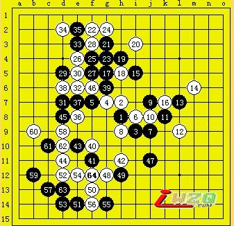

A组第一轮
山口釉水(白)VS冈部宽(黑)
很久没有在网上看直播了，今天转播的这盘是两位日本的高手对局。从年龄上山口和冈部算两代人吧，技艺上山口也略胜一筹。山口开丘月局，冈部考虑后提出交换。当转播给出黑棋两打点时候，我感觉山口会留下最强的a点，b点（7i）之所以不考虑是因为那样的局面容易和棋，非现在的山口的棋风。
果然，白6避开常见的最强防，黑7按照一般的思路会档上面。实战冈部的7也不失为一种选择，双方到14必然，局部黑无胜的基本形。
15有多种选择，我的感觉是6g、9g和6j，6g是第一感，其他两点稍作分析就否定了。可惜，黑棋并没有选择6g，初步的分析6g很强的一步，实战白棋防守难。
冈部的15不好，16坚实的防守后黑棋很难有机会争胜了。17似乎和19相关联的下法，但实战的效果不好，尤其是21～39简直是无谋，这样的局部能否追胜还是很容易算清的，如无胜机当然可以选择保留变化，如此完全是初学者的下法。尤其是最后还丢了先手，实在是无法忍受。
40局部的绝好点，这盘棋看到这里白棋有望的局面。下面进入到山口的表演时间，42的时候我在观棋室说，黑棋要注意右边12附近的潜力，结果43似乎要点防，被44巧妙一击后局面变成两难，右边由于以后有42的呼应必须要防一步，而有了44，下面将来白棋也有诸多利用。实战的进程验证了我的担心，47补防后，山口巧妙运子，48～56值的爱好者好好体会。观战的直感56应该白胜了，实战的结果的确如此。
山口完胜的一局。